Loan Eligibility Prediction
Trinh Linh Dan
This project works with a loan dataset to do EDA with IBM Cognos and predict loan eligibility using machine learning models.
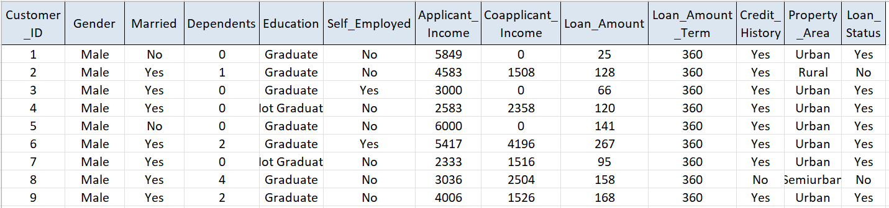
The dataset contains detailed information on loan applicants,
includes 614 observations and 13 variables, including gender, marital status, dependents,
education, employment type, income levels, loan details, credit history, and property area.
After examining data structure, data types, missing values, duplicates, inconsistent labels,
outliers, etc., the data presents to be perfectly clean and ready for analysis.
The only work needed was to transform data into tabular format with correctly aligned rows and columnsfor and make the Excel file values standardized for easier visualization.
A sample from the dataset illustrates the structure:
“Customer 1 is a Male, Not Married, with 0 dependents, a Graduate, not self ‑ employed, earning 5849 (units) with no co ‑ applicant income,
requesting a loan of 25 (thousand units) over 360 months, with a good credit history, living in an Urban area, and the loan was approved.”
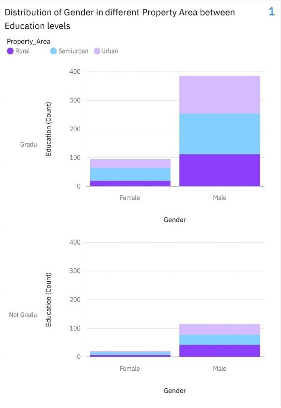
The chart explores how gender and education level intersect with property area. It shows:
- Male applicants dominate the dataset and Female applicants appear in noticeably smaller numbers in every category.
- Both Graduates and Non ‑ Graduates show similar patterns: Male's education levels are more prominent.
- All property areas have relatively similar distributions of education levels, with Semiurban areas showing a slightly higher proportion of Graduates.
The applicant pool is dominated by males, which may influence
downstream patterns in income, loan amounts, and approval rates.
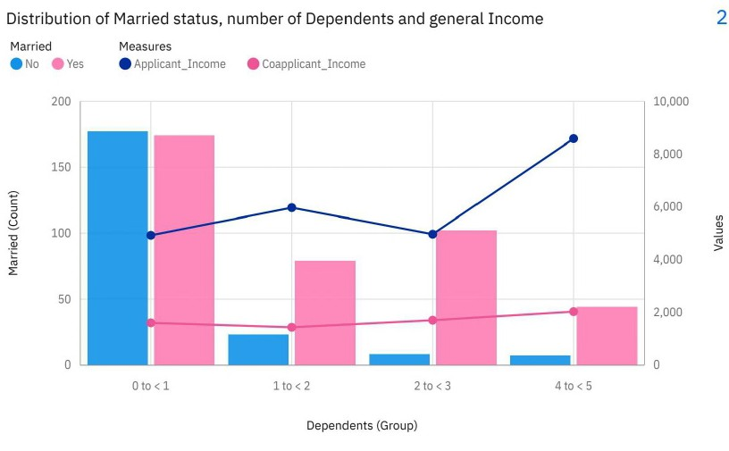
This visualization combines bar and line charts to show how marital status and number of dependents relate to income levels.
- Married applicants tend to have more dependents, suggesting that people would tend to have children after getting married.
- Applicant income generally increases as the number of dependents rises, indicating that higher earning individuals may be more likely to support larger households.
- Co ‑ applicant income shows more variability but tends to complement applicant income in families with more dependents.
This chart highlights the socioeconomic diversity of applicants and suggests that household structure may play a role in loan eligibility.
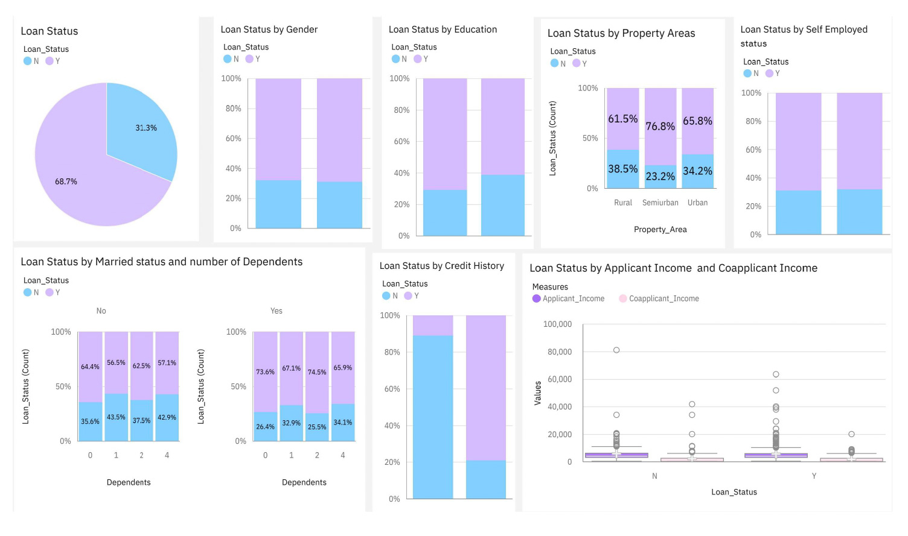
The graph above examines how loan approval (as Loan Status) varies across variables including gender, education, property area, marital status,
dependents, self ‑ employment, and credit history. There is 2/3 of people got accepted to getting loans and 1/3 of people got rejected. The key insights include:
- Education and gender show small but noticeable differences.
Through data description, we knew that male applicants appear more frequently in the dataset, but approval proportions remain relatively similar across genders.
Graduates tend to have slightly higher approval rates.
- Within property areas, Semiurban applicants have the highest approval rates, followed by urban and rural applicants.
This suggests that location may indirectly reflect economic stability or lending risk.
- Marital status and dependents reveal household ‑ level influences.
Married applicants with 0 – 2 dependents tend to have higher approval rates, possibly reflecting more stable household income structures.
- Applicants with a good credit history show a significantly higher approval rate than those without one.
This aligns with typical lending practices and immediately highlights credit history as a strong predictor.
These graphs collectively help identify which demographic variables may influence loan decisions and which appear less impactful.
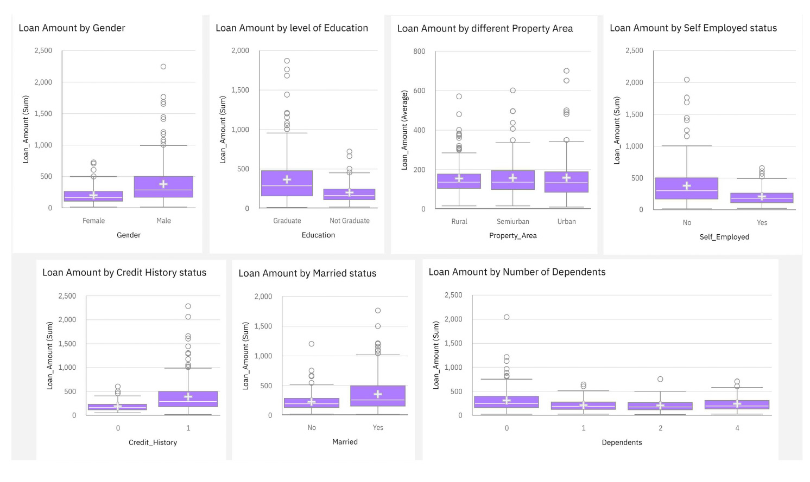
These graph shifts the focus from loan approval to loan amount, exploring how loan size varies across categories.
- Loan amounts are relatively similar across gender and education groups, suggesting that these factors do not strongly influence the size of the loan offered
- Property area shows more variation, with urban and semiurban applicants generally receiving higher average loan amounts than rural applicants.
- Credit history continues to stand out as a strong impact: applicants who have a positive credit history receiving higher loan amounts on average.
- Dependents and marital status show just a little variation, meaning moderate impact to loan amount.
The relationship between income and loan amount, using scatter plots for applicant and co ‑ applicant income are highlighted.
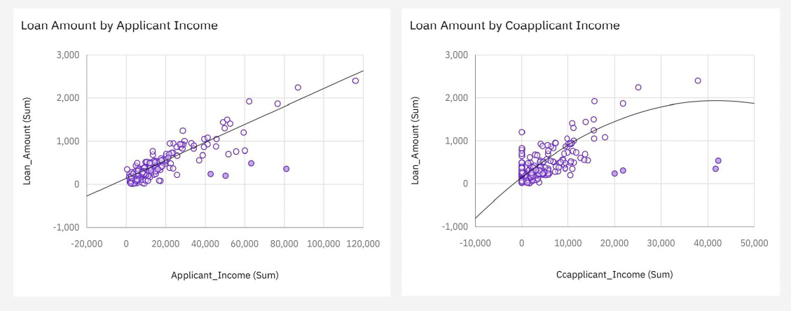
- Applicant income shows a clear positive linear relationship with loan amount.
As applicant income increases, the loan amount tends to increase as well.
This is expected, as higher income typically supports higher repayment capacity.
- Co - applicant income also shows a positive relationship with loan amount,
though the effect is less pronounced than for the primary applicant.
This implies that the co - applicant's income contributes to the overall loan amount,
but to a lesser extent than the primary applicant's income.
These insights suggest that income levels are a key determinant in loan sizing decisions.
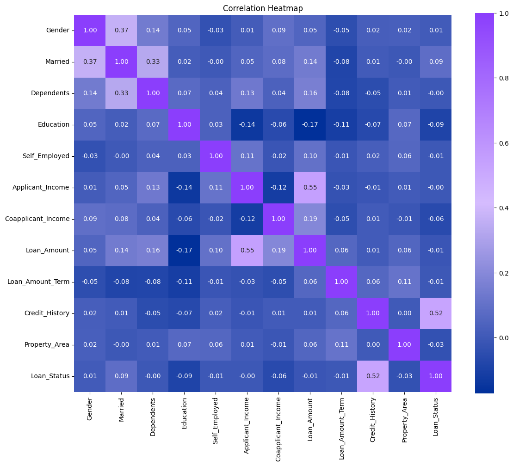
Using correlation heatmap, summary of how all major variables relate to one another is shown.
- Credit history shows strongest correlations with loan status, confirming what earlier graphs suggested.
- Applicant income and loan amount are positively correlated, consistent with the scatter plot findings.
- Categorical variables such as gender and education show weak correlations, indicating limited predictive power.
- Property area and marital status show moderate relationships, aligning with earlier bar chart observations
Predictive Strength Indicators
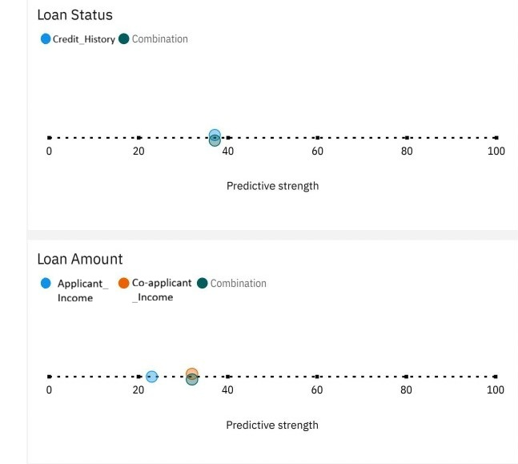
The horizontal predictive strength charts quantify how much each variable contributes to predicting Loan Status and Loan Amount.
The values fall in the moderate range, with Credit History in nearly 40% for Loan Status, and the combination of Applicant and Co-applicant income being a little more than 30% for Loan Amount.
This indicates that no single variable fully explains the outcome.
Instead, combinations of variables are needed to provide stronger predictive capability.
Logistic Regression Model
The analysis examined loan eligibility using a dataset of 614 observations with Loan_Status as the target variable.
A logistic regression model was fitted using six numeric features identified as most correlated with approval outcomes:
Credit_History, Coapplicant_Income, Loan_Amount, Loan_Amount_Term, Applicant_Income, and Dependents. The model successfully converged,
indicating stable parameter estimates. The Pseudo R-squared value of 0.2188 suggests that the selected features explain approximately 22% of the variance in loan approval decisions,
which is reasonable for binary classification in lending contexts.

The logistic regression results reveal that Credit_History is by far the most influential predictor of loan approval,
with a coefficient of 3.4894 (p < 0.001), meaning applicants with good credit history are dramatically more likely to be approved.
This feature is highly statistically significant and dominates the model's decision-making. Conversely, most other features—including Coapplicant_Income,
Loan_Amount, Loan_Amount_Term, Applicant_Income, and Dependents—show weak or non-significant relationships with approval status (p-values ranging from 0.088 to 0.915).
This suggests that while these variables were selected for their correlation with the target, their individual effects in the full model are minimal,
likely because Credit_History already captures much of the approval signal.

A rule-based decision system was constructed using simple thresholds: Credit_History ≥ 1.0, Dependents ≥ 0.0, Coapplicant_Income ≥ 1188.5, and Loan_Amount ≥ 125.0.
This rule-based approach achieved an accuracy of 72.8%, correctly classifying 447 out of 614 cases. However, the confusion matrix reveals a critical weakness:
the model predicted only 27 approved loans but 422 were actually approved, indicating severe underprediction of approvals (high false rejection rate of 165 cases).
This suggests the rules are overly restrictive and reject many applicants who should be approved, making it unsuitable for practical lending operations despite respectable accuracy.
The Information Value (IV) analysis provides a credit-scoring perspective on feature predictiveness.
Credit_History dominates with an IV of 0.867, confirming its predictability.
Property_Area (IV = 0.096) is the second-most important feature, despite not appearing in the logistic regression model, suggesting it captures approval information independent of the numeric features.
Loan_Amount_Term (0.077), Dependents (0.073), and Coapplicant_Income (0.052) show moderate information value, while Applicant_Income and Gender show minimal predictive power (IV < 0.004).
This ranking aligns with traditional credit scoring practice, where payment history (or Credit History) is the strongest approval predictor.

The Weight of Evidence (WOE) scorecard is a more sophisticated credit-scoring method, which achieved superior performance with 76.7% accuracy using a score cutoff of 470.
The WOE confusion matrix shows 421 correct approvals and 83 correct rejections, significantly reducing false rejections compared to the rule-based model.
Notably, only 34 applicants who should have been approved were rejected (false rejection rate of 8%), and 109 applicants who should have been rejected were approved (false approval rate of 18%).
This balanced error distribution makes the WOE model considerably more practical than the rules-based approach, though the higher false approval rate suggests it accepts some credit risk
to avoid losing business through excessive rejections.
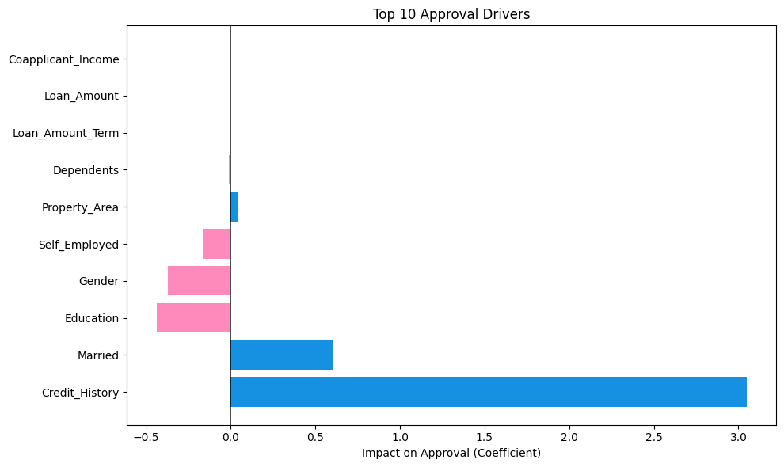
Legend
- Blue bars: Increase approval chances
- Pink bars: Decrease approval chances
- Longer bars = stronger effect
Credit_History has the strongest positive effect on approval, while Coapplicant_Income and Loan_Amount have weaker effects.
Dependents and Loan_Amount_Term show minimal influence, and Applicant_Income has a negligible effect.
This multivariate analysis confirms that Credit_History is the dominant factor in loan approval decisions, while other features
contribute little additional predictive power when considered together.
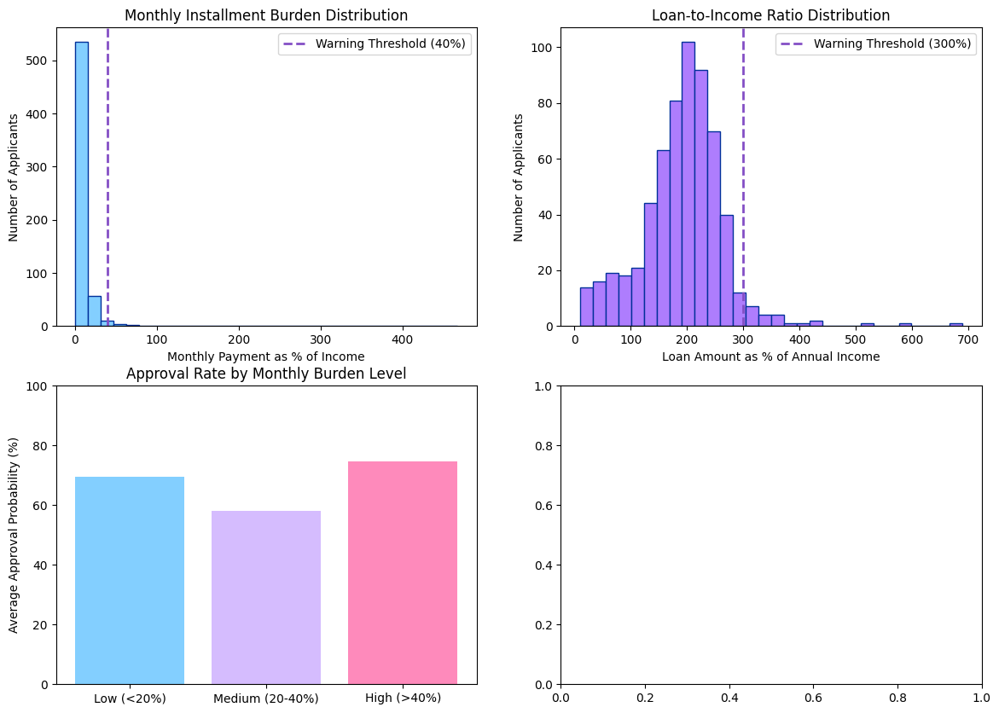
The ratios used to classify applicants into different risk bands are Installment - to - income and Loan - to - annual - income.
- Installment - to - income = (Monthly Installment / Monthly Income) * 100
- Loan - to - annual - income = (Loan Amount / Annual Income) * 100
The histograms and boxplots reveal that both ratios are heavily right ‑ skewed.
This means most applicants have very low repayment burdens, clustered near zero.
Only a small number of applicants appear as outliers, with unusually high ratios.
The warning thresholds (40% and 300%) sit far to the right of the main distribution,
showing that the majority of applicants fall well within safe limits.
The bar chart shows that low risk applicants (about below 20%) dominate the dataset, making up roughly 90% of all borrowers.
Meanwhile, medium and high risk groups are very small, indicating that most applicants are financially stable relative to their loan obligations.
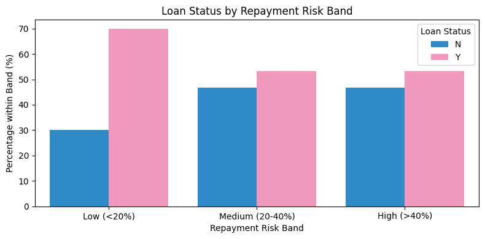
The comparison of approval rates across risk bands shows that
low risk applicants have the highest approval rates, as expected.
However, it's clear that medium and high risk applicants still receive approvals, even though at noticeably lower rates.
Besides, the difference between “approved” and “not approved” narrows as risk increases, reflecting more cautious lending decisions.
This pattern reinforces the idea that repayment capacity influences approval decisions, but it is not the sole determinant
and credit history remains the strongest driver overall.